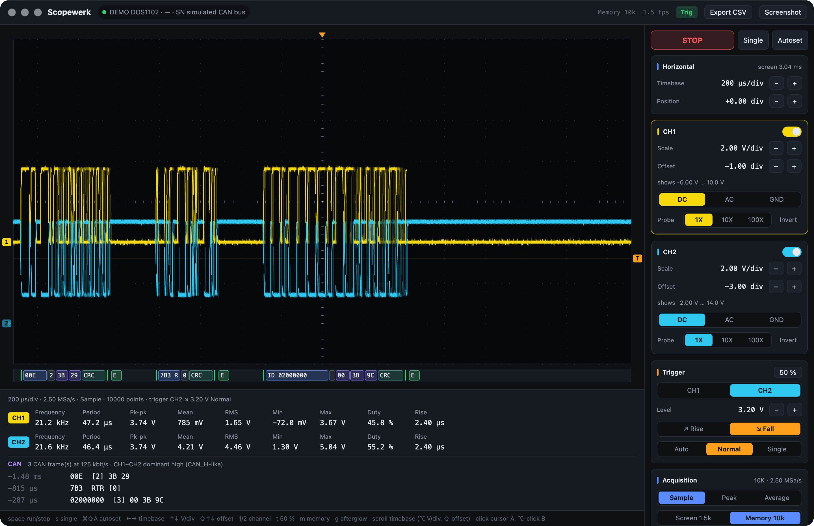
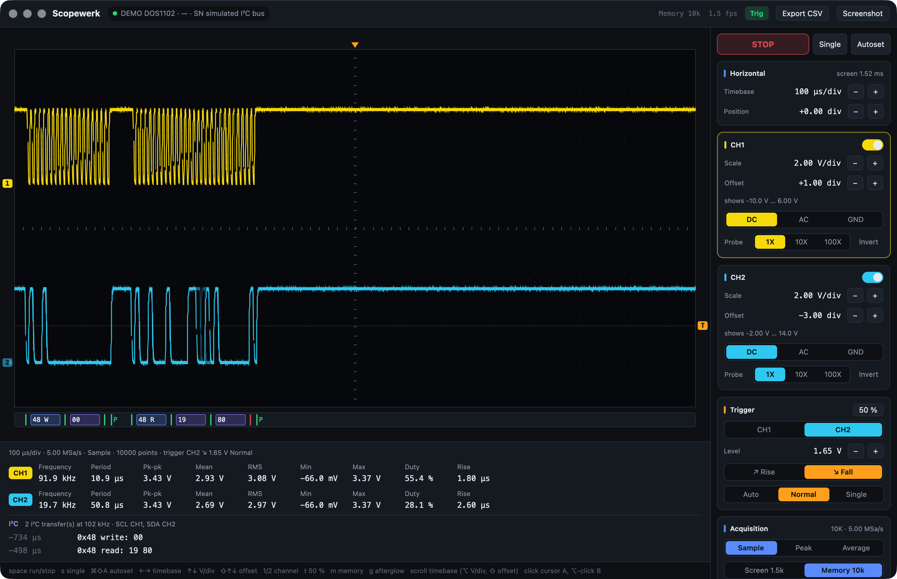
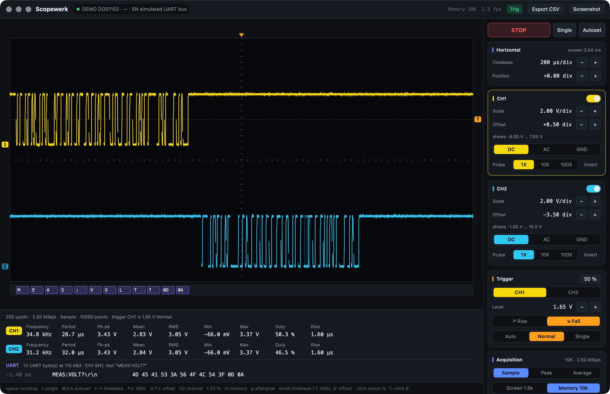

Your oscilloscope,
on your desktop.
Scopewerk turns the Hanmatek DOS1102 into a native app: a live scope screen with every control, a two-channel logic analyzer for CAN, I²C, SPI and UART, a command line tool, and an MCP server so AI agents can measure with you. Pure Rust over USB, no vendor software.

Three CAN frames on a fault-tolerant bus, decoded from CH1 − CH2 with bitrate and polarity detected.
Everything the front panel does. And then some.
The DOS1102 is a capable 110 MHz scope with a cramped screen. Scopewerk puts it on yours, adds the tools you reach for at the bench, and keeps the scope's own settings in charge.
A real scope screen
Square divisions like the instrument (15.2 × 8), afterglow, ground and trigger markers, hover readout and A/B cursors with Δt, 1/Δt and ΔV.
Every control
Timebase, position, V/div, offset, coupling, probe, invert, trigger source, level, edge and sweep, acquisition mode, run, stop, single and autoset. All on the keyboard too.
Measurements
Frequency, period, pk-pk, mean, RMS, min, max, duty cycle and rise time per channel, plus warnings when a trace clips or uses half a division.
Built for agents
Ten MCP tools to read, configure, capture and decode. While the app is open agents work through it, so every change shows up live and in the activity log.
Verified, not hoped
The firmware ignores values it does not like without a word. Scopewerk reads every change back and tells you what the scope actually did.
Exports
CSV at full resolution, the scope's own display as PNG, measurements to the clipboard, and JSON from every CLI command.
Two channels, four buses.
Scopewerk decodes the scope's 10 000-sample memory on every frame and lays the result out under the traces: labelled boxes for addresses, IDs, data and checksums, and a table of everything it found.
| Protocol | Wiring | Detected | Checked |
|---|---|---|---|
| CAN 2.0A/B | CAN_H, CAN_L or a transceiver's RX pin, or CAN_H and CAN_L on CH1/CH2 as a differential pair | Bitrate, polarity, threshold | CRC-15, bit stuffing, ACK slot, error flags |
| I²C | SCL and SDA | Thresholds, clock | START, repeated START, STOP, address and R/W, ACK/NACK |
| SPI | Clock and one data line | Clock polarity, clock rate | Words split at clock pauses |
| UART | One line | Baud rate | Framing and parity; bytes grouped into lines of text |


Samples per bit. The scope records 500 points per division, so the timebase decides the resolution. About ten samples per bit are plenty: timebase ≤ 50 / bitrate, e.g. 200 µs/div for 125 kbit/s CAN. Scopewerk warns and offers the right timebase when there are too few. For rare frames, trigger on the bus and use single shot.
Let an agent hold the probe.
scopewerk mcp is a Model Context Protocol server. Claude, Codex and other MCP clients get tools that return numbers, warnings and pictures, not raw SCPI.
I set the timebase to 200 µs/div for 20 samples per bit and decoded CH1 − CH2: three frames at 125 kbit/s, all with valid CRC.
00E carries two bytes, 7B3 is a remote request, and the extended frame 02000000 was not acknowledged by any node.The scope has no 2.3 ms step, so the timebase is now 2.00 ms/div, the nearest one. CH1 is at 2.00 V/div. Both confirmed by reading the settings back from the scope.
# Claude Code $ claude mcp add --scope user scopewerk -- \ /Applications/Scopewerk.app/Contents/MacOS/scopewerk mcp # Tools scope_status identity and every setting capture_waveform measurements, warnings, plot configure_scope change settings, read back run_control run, stop, single, autoset single_shot wait for the trigger, capture monitor_levels levels over time decode_bus CAN, I²C, SPI, UART scope_screenshot the scope's real display scope_measurements the scope's own numbers send_scpi raw escape hatch
Scriptable from the first minute.
The same engine as a CLI. With the app open it goes through the app; without, straight to USB. Add --json to anything.
$ scopewerk status HANMA DOS1102 serial … firmware V1.5.0 · RUN · via Scopewerk app 1.00 ms/div 500 kSa/s SAMPle trigger CH1 RISE 600 mV AUTO [AUTO] CH1 on 5.00 V/div offset -2.00 div DC 1X shows -10.0 V … 30.0 V CH2 on 5.00 V/div offset -2.00 div DC 1X shows -10.0 V … 30.0 V $ scopewerk set timebase=2.3ms ch1.scale=2V trigger.level=1.2V ✓ timebase 2.00 ms/div (0.0023 s/div snapped to 2.00 ms/div) ✓ CH1 2.00 V/div ✓ trigger level 1.20 V $ scopewerk decode can --input ch1-ch2 3 CAN frame(s) at 125 kbit/s (CH1−CH2 dominant high (CAN_H-like)) -1.68 ms 00E [2] 3B 29 -1.02 ms 7B3 RTR [0] -487 µs 02000000 [3] 00 3B 9C $ scopewerk capture --memory --csv bus.csv --png bus.png
Up and measuring in a minute.
Connect the square USB-B port on the back of the scope (the USB-A port on the front is for memory sticks). Scopewerk finds the scope by itself and reconnects when it comes back.
macOS
- Download the disk image and drag Scopewerk to Applications.
- First start: right-click the app → Open. The build is signed ad hoc, not notarized.
- The CLI lives inside:
/Applications/Scopewerk.app/Contents/MacOS/scopewerk
Windows
No scope yet?
- Start the app with
SCOPEWERK_DEMO=can,i2coruartto explore a simulated bus. - Build from source:
cargo run -p scopewerk-app - Read the README for the protocol details the scope never documented.